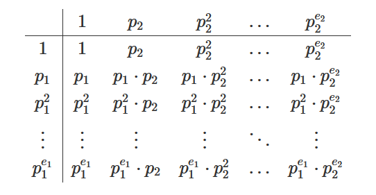

We welcome you to read our brand new article today on how to calculate
number of divisors of a number in O(log n).
E.g1.
Input: N = 8
Output: 4
since there are 4 divisors of 8 i.e. ( 1,2,4,8 )
E.g2.
Input: N = 50
Output: 6
since there are 6 divisors of 50 i.e. ( 1,2,5,10,25,50 )
First let us understand naïve way to do this.
1. Naïve Approach – Brute Force:
Naïve Approach is very simple as you may have guessed that we will be
iterating from 1 to that number N,
And in each iteration we will be checking if ‘i’ divides ‘N’, if so we will
be incrementing our count by 1 and repeating this process.
Finally we will output count, as this contains total number of divisors of
a given number N.
Below is the implementation of naïve approach:
Time Complexity: O(N)
2. Optimized Approach:
let’s look at simple example to observe something.
E.g. N = 16 then for this value of N we have total count
of divisors as 5 i.e. (1,2,4,8,16) but
what if we write 16 (i.e. N) in it’s prime factorization form so we have
16 = 24
as prime factorization of 16,
So if you notice clearly if we have 24 as our number then the
numbers which divides 24 are
20 , 21 , 22 , 23 , 2 4
Notice closely what these numbers are i.e. 1, 2, 4, 8, 16
Isn’t these number match with what we have written as divisors of 16 in
this example. Cool, now we are making some great observations can you think
of it now?
can’t make observation, don’t worry we will take one more example for clear
understanding,
E.g. N = 20 then for this value of N we have total count
of divisors as 6 i.e. (1,2,4,5,10,20) but
what if we write 20 (i.e. N) in it’s prime factorization form so we have
20 = 22 * 51
as prime factorization of 20,
So if you notice clearly if we have 22 as our
number then the numbers which divides 22 are 20 , 21 , 22 and i.e.
( 1 , 2 , 4 )
If we have 51 as our number then the numbers
which divides 51 are 50 , 51 Notice closely what these
numbers are i.e. 1, 5
Isn’t these number present in the divisors of 20 in this example. Cool, now
we are making some great observations from here.
Observation:
If there is only one distinct prime divisor n= p1e1, then there are obviously e1+1
divisors ( 1 , p1 , p12 , …, p1e1 ).
If there are two distinct prime divisors n= p1e1 * p2e2,
then you can arrange all divisors in form of a tabular.

So, the number of divisors is trivially (e1+1) * (e2+1)
A similar argument can be made if there are more than two distinct prime
factors.
Still confused? Have a look a below explanation:
Finding the number of divisors of n:
· This turns out to be an application of the multiplication principle for
counting things.
· For example, suppose we want to count (or find all of) the divisors of n
= 144.
· Begin by forming the prime factorization of 144: 144 = 24 . 3 2.
· So any divisor of 144 must be a product of some number of 2's (between 0 and 4) and some number of 3's (between 0 and 2). So here's a table of the possibilities:
|
|
20 |
21 |
22 |
23 |
24 |
|
30 |
1 |
2 |
4 |
8 |
16 |
|
31 |
3 |
6 |
12 |
24 |
48 |
|
32 |
9 |
18 |
36 |
72 |
144 |
· From the table, it's easy to see that there are 5 x 3 = 15 divisors of
144.
· In general, if you have the prime factorization of the number n.
· Then to calculate how many divisors it has, you take all the exponents in
the factorization, add 1 to each, and then multiply these "exponents + 1"s
together.
So, in simple words if you have a number N, then first write it’s prime
factorization and then do multiplication of exponents + 1, of every prime
factor.
i.e. N = P1x1 * P2x2 * P 3x3 * …..Pnxn
is the prime factorization of N, then total number of divisors is given as:
Total Divisors = ( x1 + 1 ) * ( x2 + 1 ) * ( x 3 + 1 ) …. ( Xn + 1 )
where P is Prime number,
x is Number of times, p occurs in prime factorization of N
Below is the implementation of optimized approach:
Overall Time Complexity : O( NLog(LogN) )
Answering Query : O( LogN )
Note:
here you may find that time overall time complexity of optimized approach
is more than naïve approach but, optimized approach takes logN time to answer each query and that makes optimized
approach a cool and most used once.
It is always better to solve a question after you learn a new concept as it
helps in making concrete concepts.
So, below are problems which are handpicked by Programmers Army to make your
concept more solid which you learned.
1. Problem from Hackerearth: https://www.hackerearth.com/problem/ algorithm/number-of-divisors-5/
2. Problem from Spoj:
https://www.spoj.com/problems/
COMDIV/
We highly recommend to solve above problems if you got stuck read editorials for guidance.
References:
https://cp-algorithms.com/algebra/divisors.html
https://www.math.upenn.edu/
~deturck/m170/wk2/numdivisors.html
So that’s it for this article we will be coming up with our next article on further topics of number theory very soon till then keep learning, keep coding, keep reading and keep improving !!
Happy Coding
By Programmers Army 😊